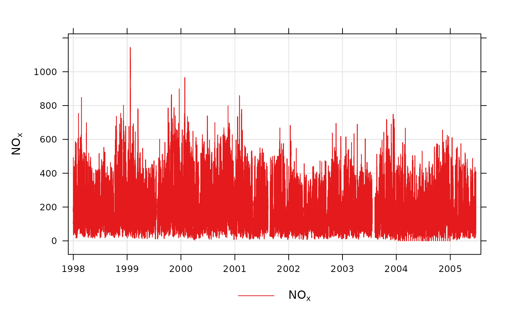

Plot time series quickly, perhaps for multiple pollutants, grouped or in separate panels.
Usage
timePlot(
mydata,
pollutant = "nox",
group = FALSE,
stack = FALSE,
normalise = NULL,
avg.time = "default",
data.thresh = 0,
statistic = "mean",
percentile = NA,
date.pad = FALSE,
type = "default",
cols = "brewer1",
plot.type = "l",
key = TRUE,
log = FALSE,
windflow = NULL,
smooth = FALSE,
ci = TRUE,
y.relation = "same",
ref.x = NULL,
ref.y = NULL,
key.columns = 1,
key.position = "bottom",
name.pol = pollutant,
date.breaks = 7,
date.format = NULL,
auto.text = TRUE,
plot = TRUE,
...
)Arguments
- mydata
A data frame of time series. Must include a
datefield and at least one variable to plot.- pollutant
Name of variable to plot. Two or more pollutants can be plotted, in which case a form like
pollutant = c("nox", "co")should be used.- group
If more than one pollutant is chosen, should they all be plotted on the same graph together? The default is
FALSE, which means they are plotted in separate panels with their own scaled. IfTRUEthen they are plotted on the same plot with the same scale.- stack
If
TRUEthe time series will be stacked by year. This option can be useful if there are several years worth of data making it difficult to see much detail when plotted on a single plot.- normalise
Should variables be normalised? The default is is not to normalise the data.
normalisecan take two values, either “mean” or a string representing a date in UK format e.g. "1/1/1998" (in the format dd/mm/YYYY). Ifnormalise = "mean"then each time series is divided by its mean value. If a date is chosen, then values at that date are set to 100 and the rest of the data scaled accordingly. Choosing a date (say at the beginning of a time series) is very useful for showing how trends diverge over time. Settinggroup = TRUEis often useful too to show all time series together in one panel.- avg.time
This defines the time period to average to. Can be “sec”, “min”, “hour”, “day”, “DSTday”, “week”, “month”, “quarter” or “year”. For much increased flexibility a number can precede these options followed by a space. For example, a timeAverage of 2 months would be
period = "2 month". See functiontimeAveragefor further details on this.- data.thresh
The data capture threshold to use when aggregating the data using
avg.time. A value of zero means that all available data will be used in a particular period regardless if of the number of values available. Conversely, a value of 100 will mean that all data will need to be present for the average to be calculated, else it is recorded asNA. Not used ifavg.time = "default".- statistic
The statistic to apply when aggregating the data; default is the mean. Can be one of “mean”, “max”, “min”, “median”, “frequency”, “sd”, “percentile”. Note that “sd” is the standard deviation and “frequency” is the number (frequency) of valid records in the period. “percentile” is the percentile level between 0-100, which can be set using the “percentile” option - see below. Not used if
avg.time = "default".- percentile
The percentile level in percent used when
statistic = "percentile"and when aggregating the data withavg.time. More than one percentile level is allowed fortype = "default"e.g.percentile = c(50, 95). Not used ifavg.time = "default".- date.pad
Should missing data be padded-out? This is useful where a data frame consists of two or more "chunks" of data with time gaps between them. By setting
date.pad = TRUEthe time gaps between the chunks are shown properly, rather than with a line connecting each chunk. For irregular data, set toFALSE. Note, this should not be set fortypeother thandefault.- type
typedetermines how the data are split i.e. conditioned, and then plotted. The default is will produce a single plot using the entire data. Type can be one of the built-in types as detailed incutDatae.g. “season”, “year”, “weekday” and so on. For example,type = "season"will produce four plots --- one for each season.It is also possible to choose
typeas another variable in the data frame. If that variable is numeric, then the data will be split into four quantiles (if possible) and labelled accordingly. If type is an existing character or factor variable, then those categories/levels will be used directly. This offers great flexibility for understanding the variation of different variables and how they depend on one another.Only one
typeis currently allowed intimePlot.- cols
Colours to be used for plotting. Options include “default”, “increment”, “heat”, “jet” and
RColorBrewercolours --- see theopenairopenColoursfunction for more details. For user defined the user can supply a list of colour names recognised by R (typecolours()to see the full list). An example would becols = c("yellow", "green", "blue")- plot.type
The
latticeplot type, which is a line (plot.type = "l") by default. Another useful option isplot.type = "h", which draws vertical lines.- key
Should a key be drawn? The default is
TRUE.- log
Should the y-axis appear on a log scale? The default is
FALSE. IfTRUEa well-formatted log10 scale is used. This can be useful for plotting data for several different pollutants that exist on very different scales. It is therefore useful to uselog = TRUEtogether withgroup = TRUE.- windflow
This option allows a scatter plot to show the wind speed/direction as an arrow. The option is a list e.g.
windflow = list(col = "grey", lwd = 2, scale = 0.1). This option requires wind speed (ws) and wind direction (wd) to be available.The maximum length of the arrow plotted is a fraction of the plot dimension with the longest arrow being
scaleof the plot x-y dimension. Note, if the plot size is adjusted manually by the user it should be re-plotted to ensure the correct wind angle. The list may contain other options topanel.arrowsin thelatticepackage. Other useful options includelength, which controls the length of the arrow head andangle, which controls the angle of the arrow head.This option works best where there are not too many data to ensure over-plotting does not become a problem.
- smooth
Should a smooth line be applied to the data? The default is
FALSE.- ci
If a smooth fit line is applied, then
cidetermines whether the 95 percent confidence intervals are shown.- y.relation
This determines how the y-axis scale is plotted. "same" ensures all panels use the same scale and "free" will use panel-specific scales. The latter is a useful setting when plotting data with very different values.
- ref.x
See
ref.yfor details. In this case the correct date format should be used for a vertical line e.g.ref.x = list(v = as.POSIXct("2000-06-15"), lty = 5).- ref.y
A list with details of the horizontal lines to be added representing reference line(s). For example,
ref.y = list(h = 50, lty = 5)will add a dashed horizontal line at 50. Several lines can be plotted e.g.ref.y = list(h = c(50, 100), lty = c(1, 5), col = c("green", "blue")). Seepanel.ablinein thelatticepackage for more details on adding/controlling lines.- key.columns
Number of columns to be used in the key. With many pollutants a single column can make to key too wide. The user can thus choose to use several columns by setting
columnsto be less than the number of pollutants.- key.position
Location where the scale key is to plotted. Can include “top”, “bottom”, “right” and “left”.
- name.pol
This option can be used to give alternative names for the variables plotted. Instead of taking the column headings as names, the user can supply replacements. For example, if a column had the name “nox” and the user wanted a different description, then setting
name.pol = "nox before change"can be used. If more than one pollutant is plotted then usece.g.name.pol = c("nox here", "o3 there").- date.breaks
Number of major x-axis intervals to use. The function will try and choose a sensible number of dates/times as well as formatting the date/time appropriately to the range being considered. This does not always work as desired automatically. The user can therefore increase or decrease the number of intervals by adjusting the value of
date.breaksup or down.- date.format
This option controls the date format on the x-axis. While
timePlotgenerally sets the date format sensibly there can be some situations where the user wishes to have more control. For format types seestrptime. For example, to format the date like “Jan-2012” setdate.format = "%b-%Y".- auto.text
Either
TRUE(default) orFALSE. IfTRUEtitles and axis labels will automatically try and format pollutant names and units properly e.g. by subscripting the ‘2’ in NO2.- plot
Should a plot be produced?
FALSEcan be useful when analysing data to extract plot components and plotting them in other ways.- ...
Other graphical parameters are passed onto
cutDataandlattice:xyplot. For example,timePlotpasses the optionhemisphere = "southern"on tocutDatato provide southern (rather than default northern) hemisphere handling oftype = "season". Similarly, most common plotting parameters, such aslayoutfor panel arrangement andpchandcexfor plot symbol type and size andltyandlwdfor line type and width, as passed toxyplot, although some maybe locally managed byopenairon route, e.g. axis and title labelling options (such asxlab,ylab,main) are passed viaquickTextto handle routine formatting. See examples below.
Value
an openair object
Details
The timePlot is the basic time series plotting function in
openair. Its purpose is to make it quick and easy to plot time series
for pollutants and other variables. The other purpose is to plot potentially
many variables together in as compact a way as possible.
The function is flexible enough to plot more than one variable at once. If
more than one variable is chosen plots it can either show all variables on
the same plot (with different line types) on the same scale, or (if
group = FALSE) each variable in its own panels with its own scale.
The general preference is not to plot two variables on the same graph with
two different y-scales. It can be misleading to do so and difficult with more
than two variables. If there is in interest in plotting several variables
together that have very different scales, then it can be useful to normalise
the data first, which can be down be setting the normalise option.
The user has fine control over the choice of colours, line width and line types used. This is useful for example, to emphasise a particular variable with a specific line type/colour/width.
timePlot works very well with selectByDate(), which is used for
selecting particular date ranges quickly and easily. See examples below.
By default plots are shown with a colour key at the bottom and in the case of
multiple pollutants or sites, strips on the left of each plot. Sometimes this
may be overkill and the user can opt to remove the key and/or the strip by
setting key and/or strip to FALSE. One reason to do this
is to maximise the plotting area and therefore the information shown.
See also
Other time series and trend functions:
TheilSen(),
calendarPlot(),
smoothTrend(),
timeProp(),
timeVariation(),
trendLevel()
Examples
# basic use, single pollutant
timePlot(mydata, pollutant = "nox")

# two pollutants in separate panels
if (FALSE) timePlot(mydata, pollutant = c("nox", "no2"))
# two pollutants in the same panel with the same scale
if (FALSE) timePlot(mydata, pollutant = c("nox", "no2"), group = TRUE)
# alternative by normalising concentrations and plotting on the same
scale
#> function (x, center = TRUE, scale = TRUE)
#> UseMethod("scale")
#> <bytecode: 0x557f055f6630>
#> <environment: namespace:base>
if (FALSE) {
timePlot(mydata, pollutant = c("nox", "co", "pm10", "so2"), group = TRUE, avg.time =
"year", normalise = "1/1/1998", lwd = 3, lty = 1)
}
# examples of selecting by date
# plot for nox in 1999
if (FALSE) timePlot(selectByDate(mydata, year = 1999), pollutant = "nox")
# select specific date range for two pollutants
if (FALSE) {
timePlot(selectByDate(mydata, start = "6/8/2003", end = "13/8/2003"),
pollutant = c("no2", "o3"))
}
# choose different line styles etc
if (FALSE) timePlot(mydata, pollutant = c("nox", "no2"), lty = 1)
# choose different line styles etc
if (FALSE) {
timePlot(selectByDate(mydata, year = 2004, month = 6), pollutant =
c("nox", "no2"), lwd = c(1, 2), col = "black")
}
# different averaging times
#daily mean O3
if (FALSE) timePlot(mydata, pollutant = "o3", avg.time = "day")
# daily mean O3 ensuring each day has data capture of at least 75%
if (FALSE) timePlot(mydata, pollutant = "o3", avg.time = "day", data.thresh = 75)
# 2-week average of O3 concentrations
if (FALSE) timePlot(mydata, pollutant = "o3", avg.time = "2 week")